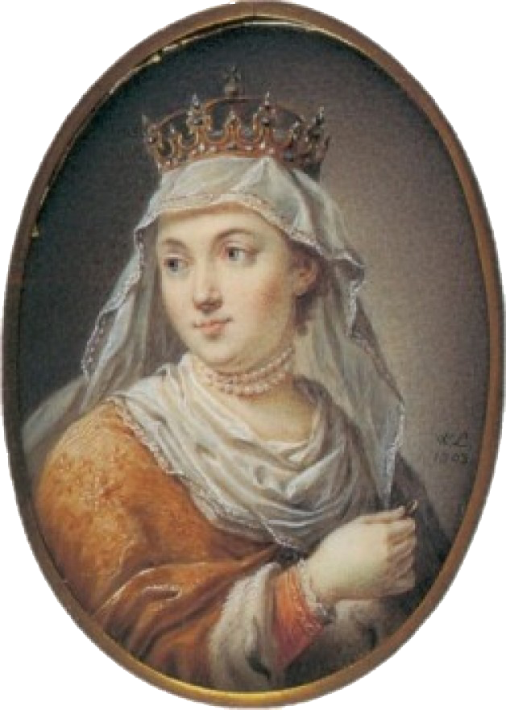
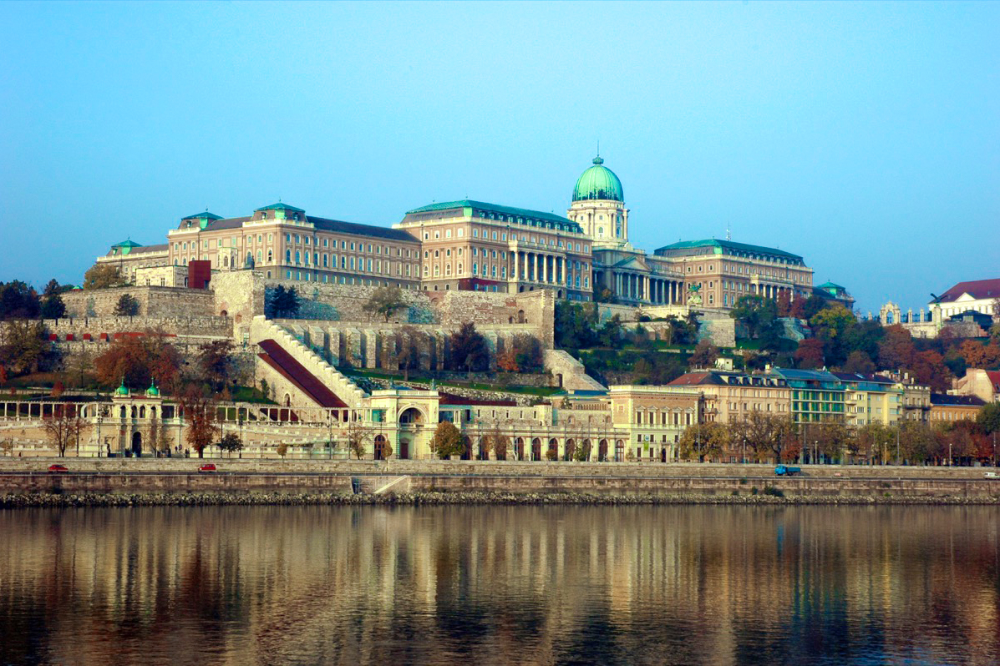
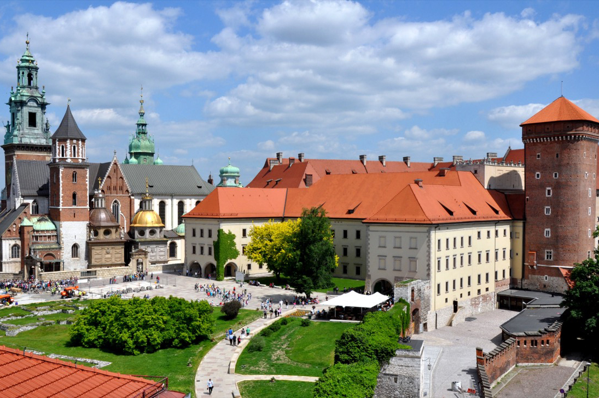
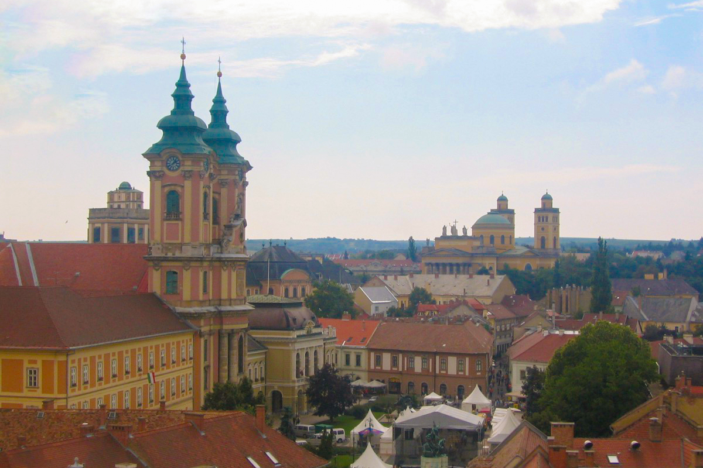

I. Jadwiga Lengyelország Királynője (1384-1399)
Az immár Szent II. János Pál Pápa által 1997-ben Szentté avatott, Hedvig magyar királylány, később Jadwiga Lengyel Királynő ereklyéjét az „örök érvényű Lengyel-Magyar barátság” jegyében 2002-ben Krakkó érseke; Franciszek Macharszki Bíboros adta át Egerben, a lengyel minorita atyáknak, akik azóta is az egri Minorita templomban „őrzik” a lengyel és magyar nemzet és ezen keresztül Közép-Európa összetartozásának és egyben Szent Hedvig Királynő hitvallásának azaz a „cselekvő szeretet” szimbolikus jelképéül, Szent Kinga és testvére Boldog Jolán ereklyéjével együtt.
Rólunk:
- Királyi palota -  Budapest
- Budai királyi palota -  Krakkó
- Wawel -  Eger
"Magyarország és Lengyelország két örökéletű tölgy, melyek külön törzset növesztettek, de gyökereik a föld alatt messze futnak, összekapcsolódtak és láthatatlanul egybefonódtak. Ezért egyiknek léte és erőteljessége a másik életének és egészségének feltétele."
"Węgry i Polska to dwa wiekuiste dęby, każdy z nich wystrzelił pniem osobnym i odrębnym, ale ich korzenie, szeroko rozłożone pod powierzchnią ziemi, i splątały się, i zrastały niewidocznie. Stąd byt i czerstwość jednego jest drugiemu warunkiem życia i zdrowia."